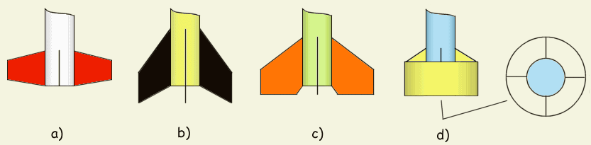
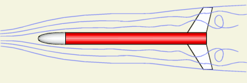
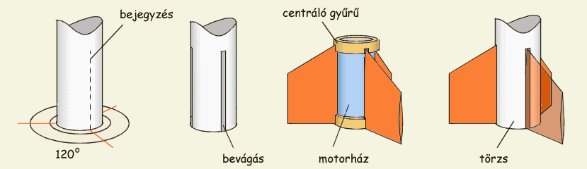
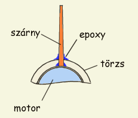

Szubszonikus és szuperszonikus szárnyak alakja
A szárnyak a rakéta stabilitását hivatottak biztosítani. Szárnyak nélkül a rakéta nem képes tartani a megadott irányt. Természetesen más módszerekkel is lehet stabilizálni a rakétát, pl. pörgéssel illetve "farok" vagy pálca használatával mint az a tüzijátékrakéták esetében figyelhető meg, de a legkézenfekvőbb megoldás a szárnyak használata marad, a módszer egyszerűsége valamint hatékonysága miatt. A szárnyak könnyen elkészíthetőek, viszonylag kevéssé növelik a légellenállást és nagymértékben stabilizálnak. Elvégre is erre lettek kitalálva.
A szárny formája elsősorban a légellenállás miatt lényeges. A mellékelt ábrán egy közönséges trapéz alakú szárny látható, amely talán a legelterjedtebb forma az amatőr rakéták világában, lévén hogy ezt a legegyszerűbb kivágni. A törzs és a szárny belépő éle által bezárt ß szög különösen nagy sebességek esetén válik fontossá, szuperszonikus rakétáknál túlságosan nagy ß a légellenállás növekedéséhez vezethet. A légellenállás csökkentése érdekében a szárny profilját is megfelelő alakúra kell kiképezni, éspedig a belépő él gömbölyített kell legyen, a kilépő pedig éles. Igy egy elnyújtott csepp alakú szárnyprofilhoz jutunk. Amint az ábrán is látható, a szárny legvastagabb pontja a belépő élhez van közelebb. Szuperszónikus illetve transszónikus sebességű rakéták esetén a szárny belépő élét is élesre kell kiképezni, a szárnyprofil pedig egy kétélű késpenge keresztmetszetéhez lesz hasonló. Ez esetben a szárny a belépő és kilépő élek közti távolság felénél kell a legvastagabb legyen.
|
1. Ábra: Szubszonikus és szuperszonikus szárnyak alakja |
Természetesen az említett trapézformától eltérő bármilyen más forma is használható. Amit tudni kell, hogy a szárny kialakításával befolyásolni tudjuk a rakétánk nyomásközéppontjának (CP) a helyét. Minél nagyobb felületű szárnyakat használunk és minél hátrább helyezzük el őket, annál hátrább kerül a CP. Értelemszerűen hátranyilazott szárnyak esetén még hátrább lesz a CP. Ez nagyon fontos lehet ha a lehető legkönnyebb rakéta építése a cél, ugyanis kiegyensúlyozáskor kevesebb ellensúlyt kell majd a rakéta orrába helyeznünk. A szárnyfelület növelése ugyanakkor növeli a rakéta légellenállását is, tehát nem kell túlzásba vinni. Egy kis tapasztalattal, illetve rakétatervező programok segítségével könnyen meg lehet találni az optimumot a szárnyfelület, stabilitás és légellenállás között. Jó tudni azt is, hogy a két egyforma területű szárny közül a hosszabb gyengébben stabilizál mint a szélesebb. A következő ábrán néhány, a rakétamodellezők által kedvelt szárnytípus látható.
|  | 2. Ábra: Népszerű szárnytípusok |
Az a) típus egy sima trapézalakú szárny, módosított kilépőéllel, ami nagyon hasznosnak bizonyul földetéréskor. Ha ilyen szárnyat használunk, nagyobb az esélye, hogy nem fog letörni landoláskor (az ejtőernyő általában nem lassítja le annyira a rakétát mint azt szeretnénk és leginkább a szárnyak vannak kitéve a sérülésnek). A b) illetve c) típusú szárnyakat használva hátrább kerül a rakétánk CP-je, ennek előnyei az Aerodinamika fejezetben vannak ismertetve. Versenyeken gyakran láthatunk méginkább hátranyúló szárnyakat, ám ezek nem jellemzőek az amatőr rakétákra. A d) ábrán egy különleges szárny látható, csak azért tettem be mert kialakítása nagyon eltér egy hagyományos szárnyétól. Esztétikai szempontokat figyelmen kívül hagyva, ilyen szárnyat építeni teljesen fölösleges, jól szemlélteti ellenben azt, hogy a szárny alakjának az aerodinamika törvényein kívül csak a képzeletünk szabhat gátat. Kezdő rakétaépítők a Tervrajzok oldalon találnak tipikus szárnyméreteket.
|  |
| 3. Ábra: Lamináris és turbulens áramlás a rakéta körül |
Ha az esztétikai szempontok nem számítanak, akkor olyan szárnyat próbálunk építeni, amely a legkisebb légellenállás mellett a leghatékonyabban stabilizálja a rakétát. A jobboldali ábrán egy rakéta körüli áramvonalak láthatóak, nagyon leegyszerűsítve. Megfigyelhető, hogy a rakéta közelében turbulens, míg távolabb lamináris áramlás van. A szárnyak leghatékonyabban stabilizáló része az, ami "kilóg" az örvényekből és a lamináris zónában van. Fontos tehát, hogy a szárnyak hegye minél messzebre kerüljön a törzstől, ami annyit jelent, hogy a "széles" szárnyak jobbak, mint a "hosszú" szárnyak. A szubszónikus sebességeken "ideális szárny", már ha egyáltalán beszélhetünk ilyenről, az ábrán láthatóhoz hasonló, széles szárny lesz tehát. A fenti logikát alkalmazva azonnal választ kapunk a szárnyak számára is: a stabilitás szempontjából jobb kevesebb és nagyobb szárnyat használni, mint sok kicsit. Nagyobb sebességeknél változik a helyzet, szuperszónikus repüléshez a kisebb szárnyak alkalmasabbak lehetnek, szintén légellenállásbeli megfontoásból.
Háromnál kevesebb szárnyat értelemszerűen nem használhatunk, mert nem tudnák stabilizálni a rakétát. Lehet tehát három (egymástól 120 fokra), négy (90°), hat (60°) stb. szárnyat használni. Négy szárny a legnépszerűbb, mert a szimmetriából kifolyólag a legkönnyebb pontosan felfogatni a rakéta törzsére. Három szárny használata ellenben kisebb légellenálláshoz vezet, így kifizetődő lehet a kis extra odafigyelés a felfogatáskor. Funkcionális szempontból négynél több szárny használata nem indokolt; lehet persze hat vagy éppen nyolc szárnyat is használni ha kedvünk tartja, de számolni kell azzal, hogy ennek a légellenálás látja kárát. A szárnyak ugyanis általában a rakéta összfelületének igen nagy hányadát teszik ki és a szárnyak számának növelésével rohamosan nő a felületi súrlódási ellenállás. Ezért ha pl. magassági rekordot szeretnénk dönteni, mindenképp egy háromszárnyú rakéta lesz a helyes választás.
Szárnyat készíteni lehet bármiből ami elég erős és elég könnyű. Rakétamodelleknél leggyakrabban használt anyag a balsafa, ami a parafánál is könnyebb (de erősebb) délamerikai fa. Újabban persze a műanyag szárnyak élik a fénykorukat, de ezek amatőr körökben nem szorították ki a fát, mivel ez utóbbi könnyebben megmunkálható. Kisebb rakétákhoz fenyőfából készíthetünk szárnyakat; ez könnyen a megfelelő formára alakítható, csiszolva és néhány rétegben lefestve pedig eléggé sima lesz. Vigyázni kell, hogy a fa erezete a szárny belépő élével legyen párhuzamos, így lesz a legerősebb. Ha a fa erezete a rakéta hossztengelyével párhuzamos, könnyen megeshet hogy letörik a vége. Ha rétegelt falemezt használunk természetesen nem áll fenn ez a probléma. Különböző vastagságú balsa- és rétegelt falemezeket modellező- vagy barkácsboltokban találunk; 1 mm és 5 mm közötti vastagságban különösebb probléma nélkül beszerezhetőek. "Egyhasználatú" rakétákhoz kár túl sok munkát fektetni a szárnyakba, én ilyenkor telefonkártyákból szoktam őket kivágni. A "telefonkártya-műanyag" meglehetősen erős és rugalmas, epoxyval és szilikonragasztóval jól ragasztható. Ha műanyag szárnyakat használunk, akkor győződjünk meg róla hogy ezek a motor hőjétől nem veszítik el szilárdságukat vagy rugalmasságukat, mert a szárny deformációja a stabilitás vesztéséhez vezet. Nagy rakétákhoz használhatunk alumíniumlemezt, de a fa is tökéletes; mindenképpen ez utóbbi ajánlott a biztonságos rakétázás érdekében. Nagyobb méreteknél a fából készült szárnyakat tanácsos üvegszálszövettel bevonni, így sokkal erősebbek és kevésbé sérülékenyek lesznek. Az üvegszál- illetve szénszálerősítésű balsafaszárnyak igen kedveltek, minden tekintetben kiválóak; szilárdság, rugalmasság és könnyűség szempontjából a kereskedelemben kapható szárnyakkal is lazán felveszik a versenyt.
Nem elég a szárnyakat jól kialakítani, fel is kell őket fogatni a törzsre. Rosszul rögzített szárnyak nagy sebességnél leválnak a törzsről, a rakéta instabillá válik és bukdácsolni kezd. Lassú rakétáknál (70...80 m/s) elég lehet valamilyen erős ragasztóval a törzshöz ragasztani a szárnyakat, majd száradás után egy réteg epoxyval megerősíteni a szárny-törzs illesztést, ám nagyobb sebességeknél az ilyen megoldások nem megbízhatóak. Volt alkalmam megvizsgálni egy rakétát, amelyről kb. 160 m/s sebességnél a légellenállás minden, az előzőekben leírt módon ragasztott részt letépett (szárnyakat és megvezető gyűrűket). Ha gyors rakétát akarunk, keményen fel kell tehát fogatnunk a szárnyakat.
Nagyobb rakétáknál általában nem jelent túl nagy gondot a szárny felfogatása, mert szóba jöhet a csavarral, szegecseléssel való rögzítés. Kisméretű, és főként papírból készült rakéták esetében viszont más megoldásra van szükség. A következőkben leírt modszer jól használható minden típusú és méretű rakétához és megfelelően szilárd illesztést biztosít.
|  | 4. Ábra: A szárnyak rögzítésének lépései |
Először is be kell jegyezni a szárnyak pontos helyét a törzsön. Ezt nagyon megkönnyíti ha egy papírlapra néhány koncentrikus kört rajzulunk, majd bejelöljük rajta a szárnyak vetületét az ábrán látható módon. Ezt követően csak rá kell helyeznünk a törzset a sablonunkra, majd egy-egy vonalat húzni a szárnyak helyére. A szárnyakat tulajdonképpen nem a törzsre ragasztjuk, hanem a motorházra (vagy közvetlenül a motorra). A motorház centráló gyűrűit tetszés szerint fel lehet használni a szárny még erősebb rögzítésére. A motorház-szárny illesztést epoxyval kell megerősíteni. A törzset bevágjuk a szárnyak helyén, majd egyszerűen ráhúzzuk a motor-szárny együttesre. A szárny-törzs illesztést szintén epoxyval ragasztjuk, majd a légelenállás csökkentése érdekében a következő ábrán látható módon kitöltjük ragasztóval vagy valamilyen asztalosgittel. Ehhez a művelethez a legcélszerűbb egy kávéskanalat használni: ezt végighúzva a szárny és a törzs találkozásánál hosszan elhelyezett gittcsíkon megkapjuk a kellő formát. Száradás után ha szükséges akkor meg kell egy kicsit csiszolni, majd az egészet le lehet festeni.
|  | 5. Ábra: Duplán ragasztott szárny felfogatásának metszete |
A jobboldali ábra egy - a fenti módszerrel készített - szárnyillesztés metszetét illusztrálja. Látható, hogy a szárnyak a motorházhoz és a törzshöz is ragasztva vannak, ez a típusú illesztés sokkal erősebb tehát mint egy egyszerű ragasztás. Amennyiben a centráló gyűrűkhöz is hozzáfogatjuk a szárnyakat, egy nagyon masszív konstrukciót kapunk, amely bármilyen körülmények között megállja a helyét. Természetesen másként is megoldható a motorház-szárny illesztés, a ragasztás önmagában csak kis és közepes méretű rakétáknál használt módszer. Nagyobb méretek esetén a csavarozás és ragasztás egymást egészíti ki, így képezve megfelelően erős konstrukciót.
Tipp: Jó ha a szárnyakat valamilyen élénk színre festjük, mert a rakéta legjobban látható felületét képezik. Ez nemcsak a követhetőséget segíti, hanem a keresés során is hasznosnak bizonyulhat. Nem ritka ugyanis hogy egy rosszul működő ejtőernyő miatt rakétánk orral beleáll a földbe és csak a szárnyak látszanak ki a fűből.